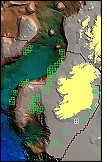

| software |
| home page |
|
SARC Home GIS Resources Programs Technology Classes GPS Base Station SARC Board Training Dept. . Cloud, Minnesota is the leading provider of geo-spatial technology education in the upper Midwest. The Center cooperates with the Department of Geography and other academic departments and campuses to provide degree programs for both undergraduates and graduates. In addition, the Center works closely with Sponsored Programs to provide employment and educational opportunities through grants and contracts to students. |
| , 1995, A new look at the slope correction for SAR radiometric calibration. Froelind, 1996, Ultra-Wideband and Low-Frequency SAR Interferometry. of Radio and Space Science, Chalmers University of Technology, Goeteborg. Sipus, 1996, RCS of Dipoles Used for SAR Calibration. School of Electrical and Compute Engineering, Chalmers University of Technology, Goeteborg. |
|  |